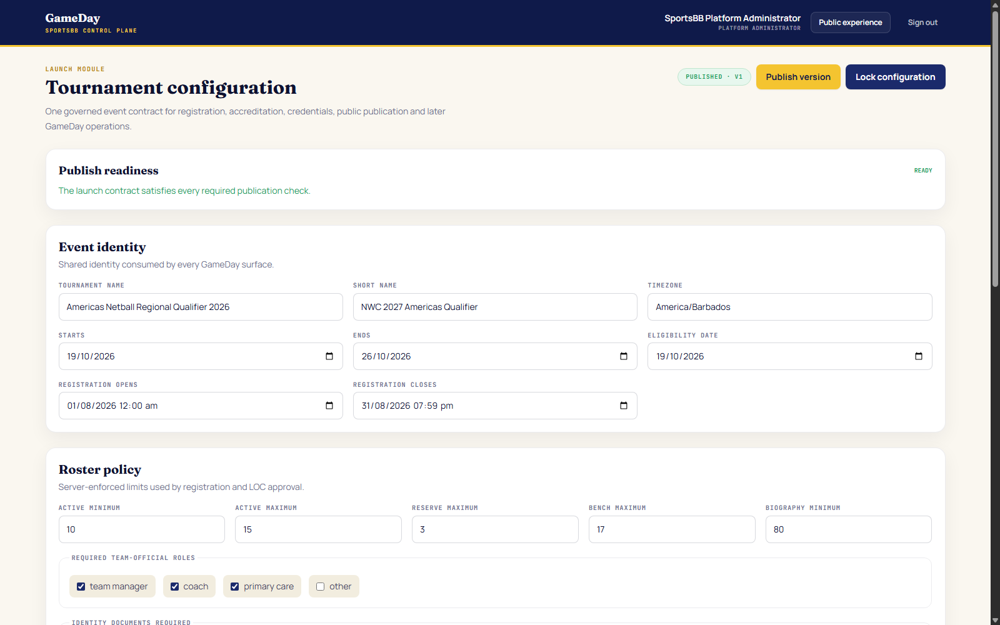
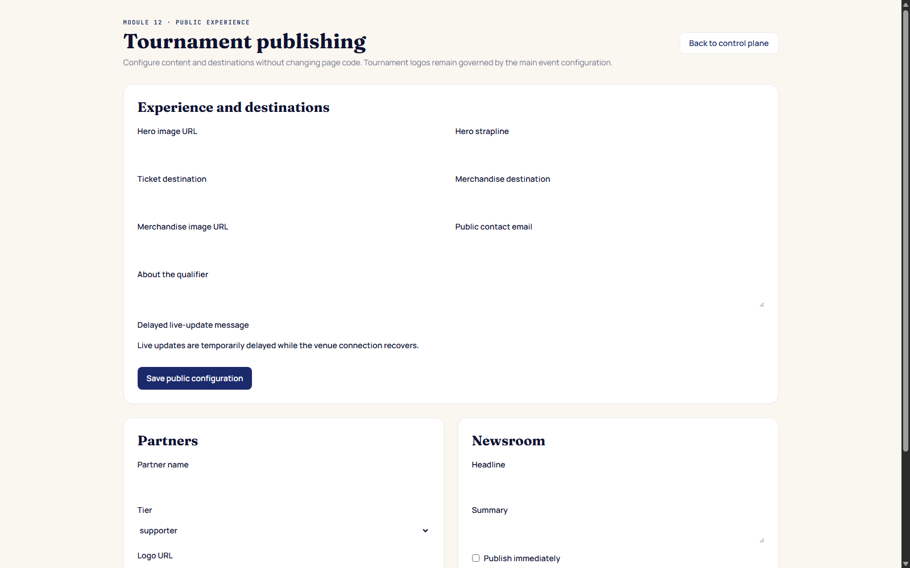

Chapter 1
Purpose and authority
SportsBB owns the reusable GameDay chassis and the event-level contract consumed by registration, accreditation, competition operations, the public website and broadcast feeds.
sportsbb_admin account may enter the SportsBB control plane. LOC credentials are deliberately denied. Never share this account with the LOC, teams, gate staff or GameDay officials.SportsBB is accountable for
Event governance
Tournament identity, dates, timezone, registration window, eligibility date, countries, roster policy, document policy, official roles and accreditation zones.
Digital service
Production domains, certificates, databases, object storage, email integration, backups, monitoring, incident response and support escalation.
Public and commercial content
Official logos, hero content, tickets, merchandise, partners, advertisements, newsroom entries and public recovery messaging.
Controlled handoff
Publish a validated configuration, give the LOC the operational boundaries it needs, and retain control of policy and commercial content.
SportsBB does not perform
- Manual review of team passports or national IDs.
- Delegation approval, roster accreditation or badge decisions.
- Routine fixture entry, GameDay staffing or match scoring.
- Coaching decisions or assignment of players to match positions.
Chapter 2
Platform and service map
| Surface | Production address | Primary users | Purpose |
|---|---|---|---|
| Platform | platform.netballamericas.org | SportsBB, LOC, GameDay roles | Control, operations, accreditation and match consoles. |
| Team Portal | teams.netballamericas.org | One authorized team officer per delegation | Registration, roster, officials, identity evidence and match sheets. |
| Public website | www.netballamericas.org | Public, media, supporters | Event information, approved rosters, fixtures, results, live scores and streams. |
| API | api.netballamericas.org | Applications, vMix, venue edge | Authenticated operations and approved public JSON/XML projections. |
| Venue GameDay | Venue LAN hostname | Assigned GameDay officials | Optional online-first standby for scoring continuity during internet loss. |
Chapter 3
Before configuration
Collect the approved source material
- Signed tournament name, short name, dates, timezone and eligibility date.
- Registration opening and closing date-times, including timezone.
- Eligible country list and official country codes.
- Approved roster limits and minimum biography length.
- Required team-official roles and maximum bench allocation.
- Identity-document and guardian-consent policy by person category.
- Eligibility regulation wording approved by the governing body.
- Accreditation categories and access-zone matrix.
- Official positive and negative NWC qualifier logo files.
- Public-site copy, links, commercial artwork and publication approvals.
Establish change ownership
| Decision | Approver | Operator | Evidence retained |
|---|---|---|---|
| Tournament policy | Event/governing authority | SportsBB | Approved brief and published configuration version. |
| Public/commercial content | Commercial/content owner | SportsBB | Artwork approval, destination verification and publication record. |
| Delegation/identity decision | LOC | Single LOC officer | Attributed platform audit event. |
| Match result | Result approver | Assigned GameDay account | Paper record plus immutable match ledger. |
Chapter 4
Sign in securely
- Open
https://platform.netballamericas.org/control. Use the.testequivalent only for local UAT. - Confirm the browser displays a valid TLS padlock and the exact production hostname.
- Enter the SportsBB administrator email and password supplied through the approved secure channel.
- Select Enter control plane. Confirm the header identifies you as Platform Administrator.
- If the screen says “SportsBB administrator only,” sign out; the wrong account is active.

Chapter 5
Configure the event contract
The control plane saves changes as a new draft version. Treat the form as a governed contract: one incorrect value can affect several downstream modules.
5.1 Event identity
- Enter the formal Tournament name exactly as approved.
- Enter the Short name used on compact screens and public components.
- Set an IANA timezone such as
America/Barbados. Do not use a fixed UTC offset. - Set tournament Starts and Ends dates.
- Set the fixed Eligibility date. Confirm it against the relevant regulations before publishing.
- Set Registration opens and Registration closes. Recheck the displayed local time and the corresponding UTC value.
5.2 Roster policy
| Field | Qualifier baseline | Effect |
|---|---|---|
| Active minimum | 10 | Roster cannot be submitted below this number. |
| Active maximum | 15 | Maximum active players. |
| Reserve maximum | 3 | Up to three travelling reserves. |
| Bench maximum | 17 | Match bench allocation across players and officials. |
| Biography minimum | Configured value | Minimum player biography characters enforced at submission. |
5.3 Team officials and evidence policy
- Select required official roles: normally Team Manager, Coach and Primary Care.
- Use “Other” only if event policy requires an additional named role. The roster supports up to two additional officials.
- Select the person categories requiring identity evidence. For the agreed qualifier policy, players require passport or national ID; officials do not automatically inherit that requirement.
- Select categories subject to guardian consent. The server applies age/category rules; do not substitute an informal checkbox.
- Enter the full eligibility-regulation reference. This text supports the declaration where a player’s nationality differs from the represented team.
Chapter 6
Maintain eligible countries
- In the control plane, scroll to the eligible-country manager.
- Compare the displayed list with the signed eligibility list.
- Add each country using its approved three-letter code and public name.
- Use the active/inactive control rather than changing a country code after teams have registered.
- Before publishing, verify there are no duplicates and that every invited country is selectable in registration.
Chapter 7
Brand and accreditation
7.1 Official event graphics
- Use the official NWC Sydney 2027 Regional Qualifier Americas artwork. Never substitute the former generic Netball Americas image.
- Set the Primary logo asset path to the approved positive artwork for light backgrounds.
- Set the Reverse logo asset path to the approved negative artwork for dark backgrounds.
- Confirm the primary preview is sharp, undistorted and complete.
- Open the Platform, Team Portal and public site at desktop and mobile widths to confirm the official artwork appears correctly.
7.2 Access-zone matrix
- Prepare valid JSON mapping each accreditation category to its allowed zones.
- Use exact zone names approved for signage and access control.
- Paste the JSON into Access-zone matrix.
- Save the draft. If parsing fails, correct commas, quotation marks and array brackets.
- Generate sample badges after publication and confirm the expected zones appear.
Chapter 8
Version, publish and lock
Save a draft
- Complete the configuration form.
- Select Save as new draft version.
- Resolve any validation error; do not refresh until the save succeeds.
- Review the Publish readiness panel.
Publish
- Run the pre-publication checklist with a second reviewer.
- Select Publish version.
- Confirm the status chip displays Published with the expected version.
- Test Team Portal registration rules and the public surfaces.
Lock
- Lock only after policy sign-off and successful UAT.
- Select Lock configuration.
- Confirm the form becomes read-only and the button indicates Configuration locked.
- Record the locked version in the launch sign-off.
Chapter 9
Configure the public website
Open /control/public or select Public experience from the SportsBB header.

- Enter the approved Hero image URL. Use a production asset location over HTTPS.
- Enter the Hero strapline; check spelling, competition naming and tone.
- Enter the Ticket destination and test it in a separate private/incognito window.
- Enter the Merchandise destination and Merchandise image URL.
- Enter the monitored Public contact email.
- Enter approved About the qualifier copy.
- Set the Delayed live-update message. Use neutral language that does not speculate about the cause.
- Select Save public configuration.
- Open the public site and verify every image, link and text block.
Chapter 10
Partners and advertising
Current partner placement behavior
| Tier | Website placement | Operational note |
|---|---|---|
| Gold | Main billboard | The first active Gold partner fills the primary advertising space. |
| Silver | First banner | Uses the supplied logo and destination. |
| Bronze | Second banner | Uses the supplied logo and destination. |
| Supporter | Partner-logo section | Displayed with the wider active partner list. |
Add a partner
- Obtain written approval for the partner name, tier, artwork and destination.
- Validate the artwork: correct brand, adequate resolution, safe margins and permitted file format.
- Upload the approved file to the production content/asset service. The current form accepts a URL; it does not upload the file itself.
- Enter Partner name.
- Select the correct Tier.
- Paste the HTTPS Logo URL and the approved Destination URL.
- Select Add partner.
- Verify the expected website slot, desktop/mobile rendering and destination behavior.
Remove or replace a partner
- Record the approval or expiry instruction.
- Use Remove beside the current entry.
- For replacement, add the newly approved record and recheck the placement.
- Clear CDN/browser caches only through the approved service procedure; never edit page code.
Chapter 11
Operate the newsroom
- Obtain approved headline and summary text.
- Enter the Headline. The platform derives a stable slug.
- Enter the Summary.
- Leave Publish immediately unchecked for a draft; select it only after approval.
- Select Add article.
- Confirm the status is Draft or Published as intended.
- Open the public website and verify the visible entry.
- Use Remove only with editorial approval.
Chapter 12
Registration readiness
Before opening
- Published version contains the correct opening/closing timestamps.
- All eligible countries are active.
- Roster and official limits match the signed requirements.
- Player identity evidence policy is enabled.
- Official event logo appears on Team Portal.
- Password-recovery email delivery is proven.
- LOC officer can access review surfaces but cannot enter SportsBB control.
- Test team can complete registration, roster, document upload and submission.
At opening time
- Confirm production monitoring is green.
- Open Team Portal in a private browser window.
- Verify new-team registration is available.
- Register a controlled test delegation only if the launch plan permits it.
- Confirm the LOC sees the submitted registration.
- Record launch time and result in the operations log.
At closing time
- Verify a new unauthenticated team cannot begin registration.
- Verify an existing approved team can still sign in and amend its roster.
- Confirm material amendments reopen LOC review and revoke affected credentials.
- Notify the LOC that no new teams will enter the intake queue.
Chapter 13
Accounts and security
- Use one named SportsBB administrator account; do not create a shared “admin” mailbox login.
- Use a minimum 12-character unique password and approved password manager.
- Distribute credentials through a secure channel, never email or this manual.
- Rotate UAT/default passwords before external access.
- Use password reset rather than revealing an existing password.
- Revoke all sessions after suspected compromise or staff departure.
- Review attributed audit events during launch and after critical changes.
- Never use the migration/superuser database credential for runtime services.
Chapter 14
UAT and launch approval
Required rehearsal
- Use the August 1 full-test window or an approved replacement date.
- Exercise one delegation from registration through roster approval and credentials.
- Configure a neutral Team A/Team B fixture.
- Assign all five GameDay roles.
- Submit both match sheets and complete a four-quarter rehearsal.
- Record goals, corrections, substitutions, statistics and an incident.
- Suspend/resume, reconcile paper and electronic records, then confirm the result.
- Test the gate online, offline, reconnect and verify deduplicated audit records.
- Test public live score delay/recovery and broadcast XML/JSON refresh.
- Record SportsBB, LOC, venue technical and broadcast sign-off.
Launch gate
Chapter 15
Daily service operations
Start-of-day
- Check Platform, Team Portal, public website and API health.
- Check database, object storage and email service health.
- Review failed logins, application errors and storage alerts.
- Confirm scheduled backups completed.
- Check public content and commercial destinations.
- During competition, confirm broadcast feeds and optional venue-edge status.
During service
- Keep an incident log with timestamps, impact and owner.
- Do not make policy changes directly in production without approval.
- Use the delayed-update message if public scores are temporarily unavailable.
- Coordinate operational issues with the LOC without granting SportsBB access.
- Preserve logs and audit evidence for material incidents.
End-of-day
- Confirm all scheduled matches are final or explicitly suspended/postponed.
- Confirm result approvers completed reconciliation.
- Review outstanding registration/credential exceptions with the LOC.
- Verify backups and record restoration point.
- Publish an internal daily status note.
Chapter 16
Change and incident control
Change procedure
- Record the requested change, owner, reason, affected modules and deadline.
- Classify it as content, operational data, policy or infrastructure.
- Obtain the correct approval.
- Test in the UAT environment.
- Schedule the production change and notify affected operators.
- Take/verify a rollback point.
- Apply the change and run targeted smoke tests.
- Record result, version and any follow-up.
Incident priorities
| Priority | Example | Immediate response |
|---|---|---|
| P1 | Registration unavailable at launch; scoring unavailable during a live match; data exposure. | Declare incident, assign lead, preserve evidence, invoke continuity procedure and communicate. |
| P2 | One major workflow degraded; broadcast/public feed materially delayed. | Workaround, targeted recovery, stakeholder update and tracked correction. |
| P3 | Minor content/display issue with no operational block. | Log, prioritize and correct through normal change control. |
Chapter 17
Handoff to the LOC
- Publish and, when approved, lock the event configuration.
- Provide the LOC with event dates, registration window, roster/document policy, access zones and escalation contacts.
- Create or verify the single named LOC officer account.
- Confirm LOC access to operations, accreditation, fixtures, staffing, venue and broadcast areas.
- Demonstrate that LOC credentials cannot enter
/controlor/control/public. - Complete one delegated workflow together from submitted team to issued credential.
- Agree support channels and incident severity definitions.
- Record formal handoff and outstanding dependencies.
Chapter 18
Production configuration
This chapter begins when servers, DNS, certificates, databases, storage, email and broadcast services are available.
Cloud environment
- Set
NODE_ENV=production. - Configure separate runtime, Platform, public-read and migration database URLs.
- Configure strong JWT/session settings and production cookie domain.
- Set API and public-site production origins.
- Configure S3/MinIO endpoint, credentials and photo/identity buckets.
- Configure password-recovery webhook, sender and support details.
- If using venue standby, configure a strong edge synchronization secret.
- Apply migrations through
0027_edge_public_broadcast.
Optional venue environment
- Register a venue node in the LOC venue-resilience screen.
- Provision a trusted venue server and local database.
- Set runtime mode to edge, node ID, secret, cloud origin and local origin.
- Provision assigned GameDay identities and scoped match data using the authoritative bootstrap manifest.
- Install process supervision and automatic restart.
- Disconnect/reconnect internet during a full rehearsal and reconcile ledger versions.
Chapter 19
Troubleshooting
| Symptom | Check | Action |
|---|---|---|
| Control plane rejects account | Active role and hostname. | Use the named SportsBB account; reset through the approved process; do not use LOC credentials. |
| Draft will not save | Required dates, numeric limits and access-zone JSON. | Correct validation/JSON and save again. |
| Publish readiness not ready | Missing required fields and logo paths. | Resolve every listed readiness item before publishing. |
| Logo broken | HTTPS path, permissions, case and asset availability. | Restore the official asset and retest all portals. |
| Partner slot shows placeholder | Active record, correct tier and reachable logo URL. | Correct/add the SportsBB-managed partner record. |
| Registration opens at wrong time | Event timezone and stored timestamp. | Stop promotion, correct through approved change control and re-test. |
| Public scores delayed | API health, match state and venue connectivity. | Enable approved delay message, recover service and verify ledger consistency. |
Chapter 20
Master checklists
Configuration sign-off
- Event identity and timezone verified.
- Registration/eligibility dates approved.
- Countries and roster policy verified.
- Officials, identity and consent policy verified.
- Official positive and negative logos verified.
- Access-zone JSON validated.
- Public content and commercial links checked.
- Draft reviewed by a second person.
- Version published and recorded.
- Lock approval recorded.
Production go-live
- DNS/TLS and all four public services healthy.
- Database roles separated and migrations applied.
- Object storage and email proven.
- Backups restored successfully in a clean environment.
- All UAT/default passwords rotated.
- LOC handoff and role isolation proven.
- Full registration-to-scoring rehearsal passed.
- Gate offline/reconnect passed.
- Broadcast feeds and public recovery state passed.
- Formal sign-offs recorded.